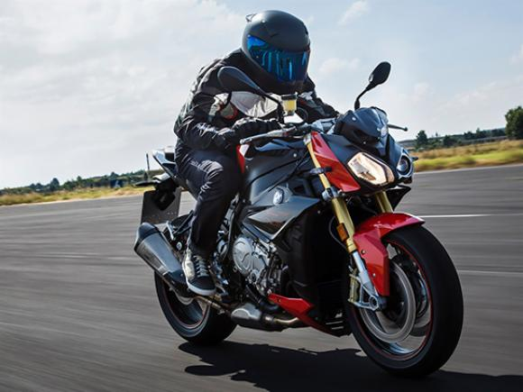
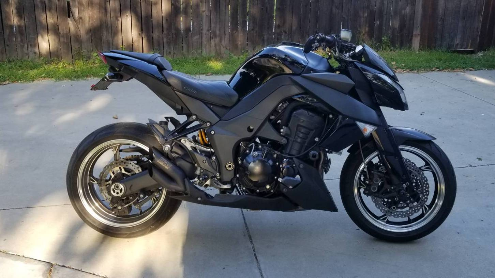

A naked alemã é a mais potente da lista. Seu motor, derivado da S 1000RR, produz 165 cv de potência máxima a 11.000 giros. Ela ainda conta com uma boa dose de eletrônica embarcada: dois modos de pilotagem, controle de tração e freios ABS otimizados para curvas.
BMW S 1000R
A naked alemã é a mais potente da lista. Seu motor, derivado da S 1000RR, produz 165 cv de potência máxima a 11.000 giros. Ela ainda conta com uma boa dose de eletrônica embarcada: dois modos de pilotagem, controle de tração e freios ABS otimizados para curvas.
Honda CB 1000R
Depois de ficar dois anos ausente do mercado brasileiro, a naked de 1.000 cc da Honda voltou completamente renovada para 2019. A começar pelo design, batizado de Neo Sports Cafe, que tem inspiração nas antigas “CBs”, mas com linhas futuristas, traduzidas pelo farol redondo e com LED, assim como lanternas e piscas. O painel digital também é bastante moderno e completo.

A Kawasaki também optou por um design radical na sua naked de um litro. A Z 1000 parece uma fera em posição de ataque e o conjunto óptico usa LEDs, assim como a lanterna traseira. Equipada com um tetracilíndrico de 1.043 cm³ que produz 142 cv a 10.000 rpm, a Z 1000 também tem bom torque em médios regimes, o que dispensa as trocas de marchas. Mas, na parte eletrônica, a naked da Kawasaki conta apenas com freios ABS de série.
Kawasaki Z 1000
A Kawasaki também optou por um design radical na sua naked de um litro. A Z 1000 parece uma fera em posição de ataque e o conjunto óptico usa LEDs, assim como a lanterna traseira. Equipada com um tetracilíndrico de 1.043 cm³ que produz 142 cv a 10.000 rpm, a Z 1000 também tem bom torque em médios regimes, o que dispensa as trocas de marchas. Mas, na parte eletrônica, a naked da Kawasaki conta apenas com freios ABS de série.